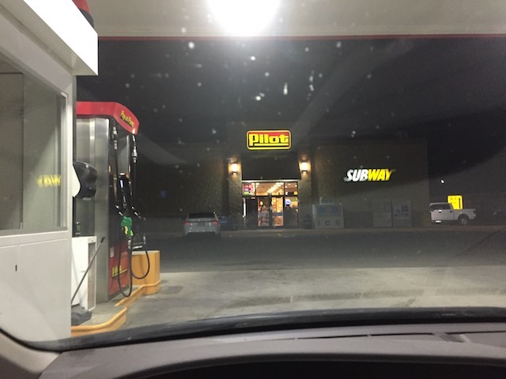

| |
Silverwood/Lagoon Road Trip
Silverwood Lagoon
All right. Time for another Incrediblecoasters Mini-Road Trip. This fairly sudden Road Trip is mainly both exploring one of the few parks in the U.S I had yet to visit and is pretty out of the way, as well as returning to one of our favorite parks in the country yet again, because it's in the area (sort of), and I really like the place. On top of that, we also checked out a lot of nature and other random fun stuff. So yeah. This is going to be a really fun couple days. OK, let's start out with another suicide night (It's been a while since our last one). OK, we made it to Sacramento. Time for a dinner stop at a Gas Station Taco Bell (That sounds way worse than it actually was LOL).
OK. We saw an interseting sight. Some random woman, a couple exits back on the Sacramento outskirts was just walking in the breakdown lane heading up the off ramp. Uh...what!? Ma'am, are you on drugs? Would've snapped a photo of her if I wasn't driving at the time.

Well, we stopped for gas in Oregon. What makes this...interesting is that Oregon is one of only two states where you can't pump your own gas (the other one is New Jersey). I know given the toxic political climate, and all the terrible things going on right now given the ongoing crisis, a law this silly isn't a big deal. And yeah, when you compare it to all of the problems we have, yeah. That's true. But it's still a stupid law that rubs me the wrong way that I want repealed. I mean, come on Oregon! Such a stupid and pointless law. But on the bright side, the guy who pumped the gas was really cool. So props to him. But I still don't like this law (Especially when you're suicide-nighting through Oregon).
"I can see Washington from my car (Seriously, we're in Oregon right now, but Washington is just across the river)!"
Hello random Washington bridge.
All right. Time for breakfast in Spokane, WA. We were originally going to go to Frank's Diner and set our GPS for that. But we wound up going to Jenny's Diner, which is far less popular and less well known. In fact, other people in the diner claimed that they too were on their way to Frank's Diner, but wound up here since it's right next door, and...it's a diner. Good enough. Just seemed like an ordinary diner to me. Nothing wrong with this place at all. Have no regrets in having gone to the wrong diner.
YAY!!! We made it to Silverwood! After 20 hours of driving, we finally made it!
 Yep. This breaks our record for new longest drive we've ever done. Our previous record was from Phoenix to San Antonio in one single blow, only stopping (excluding gas) for dinner in El Paso, and if you exclude El Paso, it was 13.5 hours straight of driving. This was from Burbank to Silverwood in one single blow, only stopping (excluding gas) for dinner in Sacramento and breakfast in Spokane, and I think if you exclude the meal stops and the little bits of gas, it was about 20 hours of driving. So yeah. We not only just broke our record, we broke it by 6.5 hours. Damn. This really stepped up our long distance driving and suicide nights. At this point, I'm sure sooner or later, we're just gonna go fully balls out and just plow across the country and go to the East Coast in one blow. After this and Texas, I'm pretty sure we can do it. Oh, and hello DejaVu clone.
Yep. This breaks our record for new longest drive we've ever done. Our previous record was from Phoenix to San Antonio in one single blow, only stopping (excluding gas) for dinner in El Paso, and if you exclude El Paso, it was 13.5 hours straight of driving. This was from Burbank to Silverwood in one single blow, only stopping (excluding gas) for dinner in Sacramento and breakfast in Spokane, and I think if you exclude the meal stops and the little bits of gas, it was about 20 hours of driving. So yeah. We not only just broke our record, we broke it by 6.5 hours. Damn. This really stepped up our long distance driving and suicide nights. At this point, I'm sure sooner or later, we're just gonna go fully balls out and just plow across the country and go to the East Coast in one blow. After this and Texas, I'm pretty sure we can do it. Oh, and hello DejaVu clone.
OK. Let's check out one of the few parks in the U.S I still have yet to visit, and without a doubt, one of the most isolated parks in the country.
Hmm. What other parks put a carousel horse on display? I can't quite remember. ;)
 All right Idaho. Show us what you've got in the theme park department.
All right Idaho. Show us what you've got in the theme park department.
Gee. I wonder which part of Silverwood has all the good rides? I have no idea.
 All right. First coaster of the trip. Let's see how this is.
All right. First coaster of the trip. Let's see how this is.
HOLY CRAP! THIS RIDE IS GOOD! REALLY F*CKING GOOD!
Aftershock is closed? NO!!! I've really missed DejaVu and was looking foreward to riding a clone of it. But now I remember all the problems these DejaVu clones have. And this is the best mantained one! DejaVu has had a lot more problems once they moved it to Six Flags New England. The one in Spain I hear is pretty well mantained, so that's good to hear. But that's it. The SFOG one is still sitting in peices in Brazil (why does Brazil seem to be the place where roller coasters go to die?). I don't really trust the one in China, and I DEFINETLY don't trust the one in Russia (Does that thing even run? I've never seen a photo or video of that clone ever operating. I've only seen photos of it standing and existing). So yeah. This is a real bummer. Hopefully it'll open up later today since apparently it was closed to winds. But I just expect that I'm going to have to come back for Aftershock.
 Well, we already did one of Silverwood's woodies. Might as well hit the other.
Well, we already did one of Silverwood's woodies. Might as well hit the other.
Clearly, Silverwood is aware of what happened at Six Flags Over Georgia back in 2008. ;)
 Tremors is the bigger of the Silverwood woodies, and while not my favorite, it's still a really fun ride with some good airtime, lots of tunnels, and a lot of laterals.
Tremors is the bigger of the Silverwood woodies, and while not my favorite, it's still a really fun ride with some good airtime, lots of tunnels, and a lot of laterals.
"POP OUT OF THE TUNNEL!!! HOPE OVER THE PATH!!! THEN TAKE THE TUNNEL AGAIN!!!!"
Hmm. Silverwood has a frisbee. Might as well give that a ride. See how that is.
 HOLY SH*T!!! THAT'S NOT A FRISBEE!!! I initially thought it was a frisbee until I saw it run. It turns out that Spin Cycle is Maxi Dance Party 360. I'd never heard of this before and it turns out this is the first one in America. It honestly looks like a cross between a giant frisbee, and Spin Out. And aside from the fact that it doesn't swing like a frisbee, that's sort of what it's like. It's just a really fun and dizzying flat ride with some wicked hangtime. Hope these catch on and more parks add this.
HOLY SH*T!!! THAT'S NOT A FRISBEE!!! I initially thought it was a frisbee until I saw it run. It turns out that Spin Cycle is Maxi Dance Party 360. I'd never heard of this before and it turns out this is the first one in America. It honestly looks like a cross between a giant frisbee, and Spin Out. And aside from the fact that it doesn't swing like a frisbee, that's sort of what it's like. It's just a really fun and dizzying flat ride with some wicked hangtime. Hope these catch on and more parks add this.
Aww. But I love climbing on fences. =(
 All right. Let's check out their Corkscrew.
All right. Let's check out their Corkscrew.
 But this isn't just any old Arrow Corkscrew. This is in fact, the original Arrow Corkscrew that used to be at Knotts Berry Farm. First modern coaster to go upsidedown.
But this isn't just any old Arrow Corkscrew. This is in fact, the original Arrow Corkscrew that used to be at Knotts Berry Farm. First modern coaster to go upsidedown.
"Dur! Maybe we should get rid of this roller coaster that literally made roller coaster history. But don't worry. It's OK. We're going to replace it with one of the most unique and original coasters in the world. A Boomerang! That's something that will be a great fit for Knotts Berry Farm. It'll remain at Knotts Berry Farm forever! It'll never go away! Because if we took out a historical coaster for a common generic clone that'd be removed eventually, then that would've been terribly stupid of us. But don't worry. That never happened!" ;)
Yeah. There's no denying it. Corkscrew deserves that award.
Oh look. It's one of those kiddy spinning coasters. This should lead to some intersting credit whoring.
 You know what the really sad thing is? This kiddy spinning coaster actually spun more than some actual spinning coasters. While that's good for the ride as spinning is always good, it's really embarassing for those parks with spinners so sad and pathetic that they're beat out by a freaking kiddy coaster.
You know what the really sad thing is? This kiddy spinning coaster actually spun more than some actual spinning coasters. While that's good for the ride as spinning is always good, it's really embarassing for those parks with spinners so sad and pathetic that they're beat out by a freaking kiddy coaster.
*gasp* Is Aftershock running!!?
 Yep. Not only was Aftershock testing, but it shortly opened up. YAY!!! I GET TO RIDE DEJAVU!!!
Yep. Not only was Aftershock testing, but it shortly opened up. YAY!!! I GET TO RIDE DEJAVU!!!
It's been way too long since I've last ridden a clone of this.
I still love those vertical lifts. Still have some seriously amazing hangtime and are just so much fun.
 Sure, it may be slightly rougher, but all in all, it's still DejaVu, which is an incredibly fun ride, and much like a lot at Silverwood, really underrated.
Sure, it may be slightly rougher, but all in all, it's still DejaVu, which is an incredibly fun ride, and much like a lot at Silverwood, really underrated.
 I'm totally down for more Tremors. We always could use more wood. ;)
I'm totally down for more Tremors. We always could use more wood. ;)
Love the station for Tremors. It doesn't look like much, but it pretty much sets it up so that it looks like it was destroyed by an earthquake. Good job Silverwood.
These Shock Drops may not be that big, but they're a lot of fun, especially since the sudden drop always gets me. =)
Hey. Might as well check out their log flume while we're here.
 Meh. It's not a very good log flume. Fairly small and standard, but I still had fun on it.
Meh. It's not a very good log flume. Fairly small and standard, but I still had fun on it.
SPLOOSH!!!
Hey look. You take a tunnel to go from the parking lot to the park. Just like at parks like Kennywood and Lake Compounce. I'm not sure if I've mentioned this, but I get a VERY similar vibe from Silverwood that I got from Kennywood and Lake Compounce, and the tunnel only adds to that.
 Yep. This was another camping trip, so we stayed right in the Silverwood Campground. Pretty small, but it worked just fine.
Yep. This was another camping trip, so we stayed right in the Silverwood Campground. Pretty small, but it worked just fine.
 Ooh. I see some of the newest slides from Boulder Beach.
Ooh. I see some of the newest slides from Boulder Beach.
It's a bummer about Boulder Beach. It looks like a fun water park.
While just roaming the park and getting rerides, we decided to give their Tilt a Whirl a ride since we don't get to ride them often. HOLY CRAP!!! The Tilt a Whirl here was running REALLY good. I think this took the record for most spinning on a Tilt a Whirl.
Hey. It's a historical ride. Might as well go again.
Though seriously. If you remove all the historical context, it'd still be a decent Corkscrew. Silverwood is definetly taking good care of this ride.
You know, I have scramblers at both of my home parks, but I never really ride them because I figure...Meh. Common ride. They're actually pretty fun sometimes.
Hey. We've got time. Let's see where their train takes us.
Hmm. Nice view of Boulder Beach.
 Hmm. You get to see Bison on this train (Fun fact. They're called Bison. Not Buffalo. I know people keep getting them mixed up, but nope. Those are Bison. Buffalo are from Africa and are WAY scarier. Seriously, they'll murder your ass like that).
Hmm. You get to see Bison on this train (Fun fact. They're called Bison. Not Buffalo. I know people keep getting them mixed up, but nope. Those are Bison. Buffalo are from Africa and are WAY scarier. Seriously, they'll murder your ass like that).
 So not only can you see Bison on the Silverwood train, but also mythical monsters like Bigfoot.
So not only can you see Bison on the Silverwood train, but also mythical monsters like Bigfoot.
The railroad was actually really cool. Not only did we see Bison and Bigfoot, but our guide got in a fight with some robbers. They fought, put on a show, and the robbers even went onto the train and "robbed us" (The people they robbed, were people, giving the money to charity, I forget the name of the charity. I think it was something along the lines of the Boys and Girls club of Northern Idaho. So the "robbery" was for a good cause). This was really clever and a lot of fun. Plus, the guy running the train kept calling me Shaggy and made a lot of jokes about why Scooby Doo wasn't with me (The only person I get compared to more often than Shaggy, is Kurt Cobain. Kind of surprised I didn't get called that since we're relatively close to Seattle, Grunge Capital of the world). That was fun. =)
OK. I'm not sure what is used for fuel on this train. It looks like the Dollywood train, which uses real coal. Not a big fan of that. Hoping the black stuff coming out is no big deal, but it's always good to use green clean energy.
I see that Silverwood has plenty of room to expand in the future. =)
 Aftershock from the train.
Aftershock from the train.
 Hmm. They have a full service sit down resteraunt. We have time, and I always enjoy seeing what independent parks have to offer foodwise. So let's check out their full service resteraunt, Lindys. Plus, it'll give me something to critique when I do the dining portion of my park review.
Hmm. They have a full service sit down resteraunt. We have time, and I always enjoy seeing what independent parks have to offer foodwise. So let's check out their full service resteraunt, Lindys. Plus, it'll give me something to critique when I do the dining portion of my park review.
Hmm. Not bad. Good food. I just wish I ordered the Orange Chicken instead of the Pulled Pork. I guess I want to like Pulled Pork more than I actually like it (Not bad, but I prefer regular burgers, and probably would've like the orange chicken more).
Yeah, it's not as good as the set up at Indiana Beach, but I still like that the paratrooper goes over the bumper boats here.
Hey. More rides on Aftershock sounds good to me.
 Riding Aftershock reminded me of how good DejaVu was and why I miss it at Six Flags Magic Mountain.
Riding Aftershock reminded me of how good DejaVu was and why I miss it at Six Flags Magic Mountain.
 If only the Giant Inverted Boomerangs were as popular as the standard Boomerang. Because these rides are SO MUCH BETTER!!! Seriously, it's so underrated it landed a spot on our Top 10 Underrated Coasters List (There's a good chance that that gets updated to include Timber Terror as well).
If only the Giant Inverted Boomerangs were as popular as the standard Boomerang. Because these rides are SO MUCH BETTER!!! Seriously, it's so underrated it landed a spot on our Top 10 Underrated Coasters List (There's a good chance that that gets updated to include Timber Terror as well).
Sweet! No line for Timber Terror! Let's make our last ride that.
I know this ride doesn't look like anything special. Looks like your standard out and back coaster. Almost like a cruiser snoozer. Don't believe that it's one for a single second. This ride is the perfect out and back coaster. This ride has REALLY good airtime. You really float out of your seat, and parts of it are even fairly ejector air like. I know the general consensus is that Tremors is the better wooden coaster at Silverwood since it's bigger, has more laterals, and more variety. And Tremors is really good and all. I like it. But I'm in the minority. Timber Terror is the better wooden coaster. Truly an underrated coaster.
Hey. Timber Terror isn't only really good airtime. There's also a lot of good laterals in the ending helix. That's always fun.
All right. Well, that was a fun day at Silverwood. Moving onto the next day of the trip. This day, instead of going to a theme park, we decided to not only drive on down to our next park, but also stop at some National Parks on the way. Yeah, we love roller coasters (This site is called Incrediblecoasters after all). Though we are also big nature people. We do cliff jumping updates, and we also go to a lot of National Parks. There's still a lot of cool stuff in California for me to do. We even threw in some National Parks in some of our updates. Big nature fan, and a big adventurer. So yeah. We just had to do this. So we're off on another adventure. Oh, and here's a random lake in Idaho.
 Welcome to Montana. Where the sky is blue, the nature is pretty, and violent criminal thugs who bodyslam journalists get elected to Congress.
Welcome to Montana. Where the sky is blue, the nature is pretty, and violent criminal thugs who bodyslam journalists get elected to Congress.
Hmm. Lunch in Butte. This place is local, let's try them. And hey. They're pretty good.
Gee. I wonder where we're going?
I know when we were driving by this lake, the dead trees sticking out fascinated me, so I went photo-crazy here. Because it intrigued me. What the f*ck is this place and why are a bunch of dead trees sticking out of the lake? Well thanks to GPS on my phone, it told me that we were at Earthquake Lake. WTF? So I did some research on the place when I got back home. Now Earthquake Lake got its name pretty much exactly how you'd think it would. It was formed in the aftermath of the 1959 Hebgen Lake Earthquake. The earthquake blocked the flow of the Madison River, so the water rose and formed a new lake, which is called Earthquake Lake since it was created by the Earthquake. All the dead trees are from a forest that was standing there. But when the Madison River rose and formed Earthquake Lake, it formed it right where this forest was. Because the trees were now at a lakebed, they couldn't survive, and they all died. What you're looking is essentially a forest's graveyard and a reminder of the 1959 Earthquake. Freaky, and kind of cool. I totally want to stop and really explore this place sometime. Apparenly there are still cabins half submerged in Quake Lake, still damaged from the Earthquake. Yeah, I want to see more of this. Glad I drove by, snapped some photos, and got to learn about this place.
Seriously love this drive. I know I say this too often, but Montana looks freaking beautiful (At least the Southwest corner of it where we are now).
All right. We made it to Yellowstone. Now at first, we were planning on going to Yellowstone, but then we decided against it since we had so little time, Yellowstone is huge, and we wanted to do it properly, and we decided to save it for another time. But we still wanted to do something and not just drive down to Lagoon. So we decided to do Grand Teton instead. We were looking for directions to Grand Teton, and we saw that the fastest way to it took us right through Yellowstone. And then we essentially shrugged and said "F*ck it!" and decided to do Yellowstone along with Grand Teton. So we made the 8.5 hour drive down to Yellowstone (It didn't even dawn on me that the drive was this long until afterwards. I'm so desnsitized to long distance driving that it didn't even cross my mind that 8.5 hours is a long drive to most people).
We may not have a lot of time here, but let's see as much of Yellowstone as we can in a brief day.
God damn it. What's the hold up over here?
Oh. It's the Bison. The unpredictable, violent tank on hooves, that can outrun you across the plains, leap over your head, and travel in herds thousands strong (And yes, actual Buffalo are still even worse).
And I don't mean the tourists are being dumbasses and stopping for the sake of seeing Bison (They're everywhere here. Seeing Bison is not a challenge). The Bison are literally in the middle of the road causing traffic.
How the hell are people stupid enough to not know to approach...*Sigh* I'm doing it again. I'm assuming that people are smarter than they are. I thought I saw how low people could go when those braindead neanderthals walked up the X2 lifthill, thinking it was the exit. I thought that was rock bottom for human stupidity. Nope! I was proven wrong last November at how much worse we are than I thought. Why do I keep doing this!? Why do I keep assuming that people are smart enough to think "Dur! Maybe I shouldn't approach dangerous wild animals like bison, wolves, and f*cking grizzly bears (Seriously. Don't approach the f*cking Bison!)! But nope. I'm expecting too much in people for thinking that. Like I always do. Excuse me, I need a drink.
"Ahh. This is the life. Posing for tourists, smiling for cameras, eating, roaming, sh*tting, sleeping, f*cking, being a bison. I love my life."
Why did the bison cross the road?
*gasp* If there are all these bison around, then that means we can have BUFFALO BURGERS (BISON BURGERS)!!!! Seriously, bison is awesome. It's my favorite meat. Seriously underrated. Bison are f*cking delicous. Damn it. Now I'm hungry for a Buffalo Burger.
OK. The Bison jam is now over (though I really enjoyed seeing them). Now we can go back to exploring Yellowstone.
We made it to Firehole Falls.
 CLIFF JUMP!!!
CLIFF JUMP!!!
Fun fact. This once was all lava.
*gasp* "It's Incrediblecoasters! It's me! Bobby Bison! Your #1 bison fan! I love your park reviews! Please sign my horns!"
Well, we made it. We're now at Old Faithful. One of the most famous parts of Yellowstone.
Old Faithful is one of the only geysers in the world that erupts on a regular basis. So it's incredibly easy to see it. It's like a theme park show (It even feels like one with all these full bleachers). Normally, we would've stuck around to see it (We would've only had to stay for another 20 minutes to catch it), but our schedule is so tight and we have so little time, that we have to get back on the road ASAP considering how much else we're seeing today and how much more driving we have. Oh well. Next time.
While we may not have seen Old Faithful, we did walk around and see the other Hydrothermal Vents in the area.
Eco-friendly asphalt? I didn't think it really mattered with stuff as banal as asphalt. Just shows how ignorant I am on the developments in green technology apparently.
Leave the path, and you just might die.
Ooh. So these aren't just deadly geysers. They're beehive geysers. Good to know.
The whole area reeks of sulpher, so that's annoying. But aside from that, I really enjoy being around here. =)
Please recycle all your crap.
OK. We're so nuts, we not only did Yellowstone, but we even ventured down into Grand Teton, since that was the original plan. Might as well see what all Grand Teton has.
I love seeing snow in the summer.
We made it! We're now in the Grand Tetons National Park!
Yet another pretty National Park. I can't think of a single bad one.
So the Grand Tetons are a mountain range that the National Park was made around. You can see them behind the lake. You know, I just really enjoyed all these Northwest Nature States (Idaho, Montana, Wyoming). They all have a similar vibe. Fairly rural, not very populated, lots of nature, very pretty. Yeah, I know there are problems with the area, and I keep hearing that I went to the best parts of all those states and that they're far more of a drudge in the other parts I didn't see (Well, except for Idaho. There's still plenty more of that for me to see). I admit. All of these states exceeded my expectations. They're no Colorado, but they're still very enjoyable.
While we sadly don't have the time to actually climb Grand Teton (Mountain Climbing is awesome. Looking foreward to doing Mt. Whitney in August), I still am going to briefly hit the trail and see as much as I can before we have to rush for dinner and not be trapped here in the dark.
Apparently, there was actually a way across that without getting my feet wet. But I didn't know that, tried hopping across those rocks, failed, and wound up with soggy feet.
TL;DR. DON'T BE A DUMBASS ABOUT F*CKING BEARS!!!
It's a shame that we can't even really see any of the stuff the sign since we're so short on time that we're just getting a brief glimpse at this place and will have to come back to see all that in full detail.
Normally, I'd be bummed about the closed trail ahead, but I won't even make it that far due to how crazy short our time here was.
String Lake with the Tetons in the background.
Will you be ready when the bears come for you and your pic-a-nic basket? ;)
We only scratched the surface with this hike, but I enjoyed what I saw and want to complete this hike sometime.
We're in Jackson, WY. I normally don't have high expectations for a place in Wyoming, but this is a nice place. It's a total ski town. It has the EXACT same vibe I got from Park City or Aspen.
Hmm. Local BBQ place that got high reviews on Yelp. This should be good.
Hey. They have Philly Cheesesteaks here. That's always good. Tasty little resteraunt.
All right. Time for the 4.5 hour drive from Jackson to Lagoon. OK, the roads in Wyoming are TERRIBLE. It's a two lane road, there are no lights around, just pitch black, you can see ALL the stars. So put your brights on. But on top of that, the road feels like just a dirt road. The line dividing the two sides is super faded and hard to see, even with brights on. I'm familiar with two lane freeways. The 118 is a two lane freeway (At least the Ventura half of it is). All the freeways we took going through Oregon on our suicide night to Silverwood were two lane freeways. But this didn't even feel like that. This felt more like driving on the straight sections of Foothill Rd than any freeway. And unless you live in Ventura, you have no idea what the f*ck Foothill Rd is. Which should explain how un-freeway like the 89 feels. I'm amazed to learn that not only is this a big highway, but this goes as far south as freaking Arizona! That amazed me! This two lane freeway that feels like just a rural middle of nowhere road goes as far south as Arizona and as far north as the Canadian Border! Maybe the rest of it is fine and standard, but at the very least, the Wyoming part needs some work done. Once we reached Idaho, we were on another two lane freeway in the middle of nowhere, but at least it felt like I was on a real f*cking freeway! During this, I saw plenty of deer of the side of the road blinded by my headlights (Thank god none of them were actually in the road). And we even passed this...power plant. I'm not sure what this was, all I know is that it looked cool and had this weird orange glow. Though you have no idea how happy I was when we finally reached the 15 and were driving on a real proper freeway again.
(Photo by A.J Hummel)
And we have arrived at Lagoon. So we left Silverwood at around 5:00 AM, drove 8.5 hrs down to Yellowstone, did a very brief Yellowstone tour, drove down to the Grand Tetons, stopped and hiked a little there, and then drove on for another 4.5 hours til we arrived at Lagoon at 1:30 AM the next day. And also keep in mind that we had to set up the tent at 1:30 AM for us to get to sleep, which took another half hour. So yeah. This was a 21 hour day for us. You can see what kind of days we have on an Incrediblecoasters Road Trip. Not for those who want to relax and take it easy. ;)
Lagoon
Home
|
{kind=link}